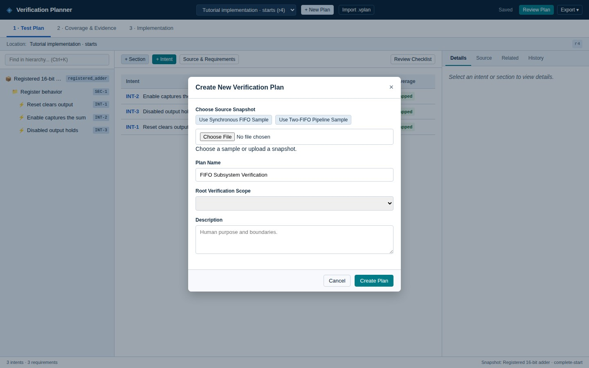
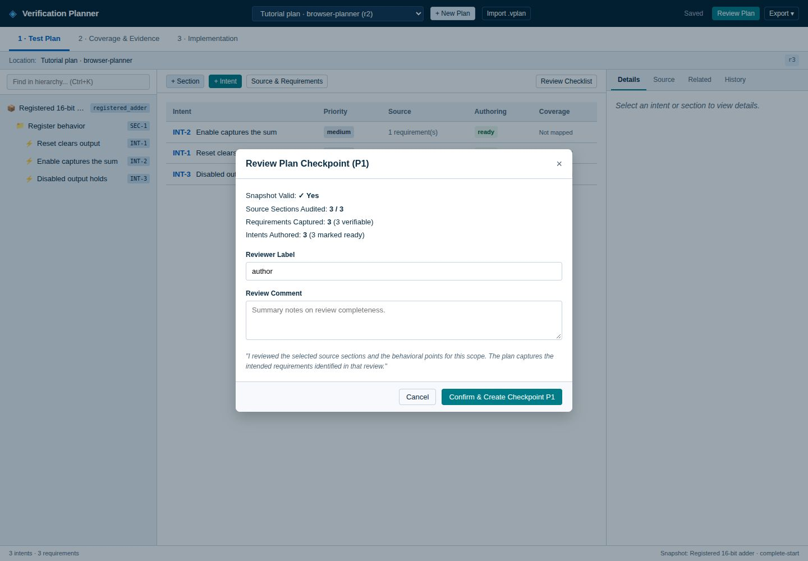

VERIFICATION PLANNER · 8 MINUTES
Capture intent and review P1
Review a snapshot-bound Test Plan and freeze its first plan checkpoint.
Before you start
Verification Planner runs separately from the combined launcher. Prepare its lesson plans as described in Setup. The current browser has no requirement-creation form, so the start supplies captured requirements; you will audit their source and author the missing intent. No model is required.
Actions
- Open Verification Planner at the supplied URL (default port 6016). To inspect the handoff first, select + New Plan, upload
registered-adder.snapshot, and inspect its scopes. This snapshot is immutable; later Spec edits do not update it. Cancel this exploratory dialog. - Select the plan named Tutorial plan with your run name in the plan selector. Find its exact name and ID in
verification/starts.json. This prepared start includes the imported snapshot, source audit, three captured requirements, and two ready intents, with no P1 checkpoint.


- Open Source & Requirements. Inspect each source audit disposition and the exact source locator for reset, capture, and hold requirements. The prepared plan is a small teaching example, not a completeness claim for all hardware behavior.
- Inspect the two ready intents, then select + Intent to add Disabled output holds. Select Register behavior as its Section, link the captured hold requirement, and copy its Given, When, Then, and output observation from the table below. Select Save & Mark Ready. There must now be three ready intents.
Intent Given When Then Reset clears output reset=1 and enable=1 A rising clk edge y=0 Enable captures the sum reset=0, enable=1, a=7, b=9 A rising clk edge y=16 Disabled output holds y=16, reset=0, enable=0, a=1, b=2 A rising clk edge y remains 16 - Select Review Plan. Read the checklist and the blocker list. Enter your reviewer label and comment. Confirm the review only after the checklist is clear. Inspect the resulting P1 checkpoint. Draft edits made later do not change that frozen checkpoint.


Check your result
The selected plan refers to the intended source snapshot and has one reviewed P1 checkpoint. No hardware tests were executed.
Try it yourself
Create a draft intent for modulo wraparound (65535 + 1). Identify the missing fields needed before it could be ready.
If it fails
If review is blocked, inspect unresolved audits, requirements, or intent fields. Do not bypass the checklist. If port 6016 is unavailable, start the separate service using Setup.
Continue
CONTINUEExplore another feature →Reference: verification planner · Complete example